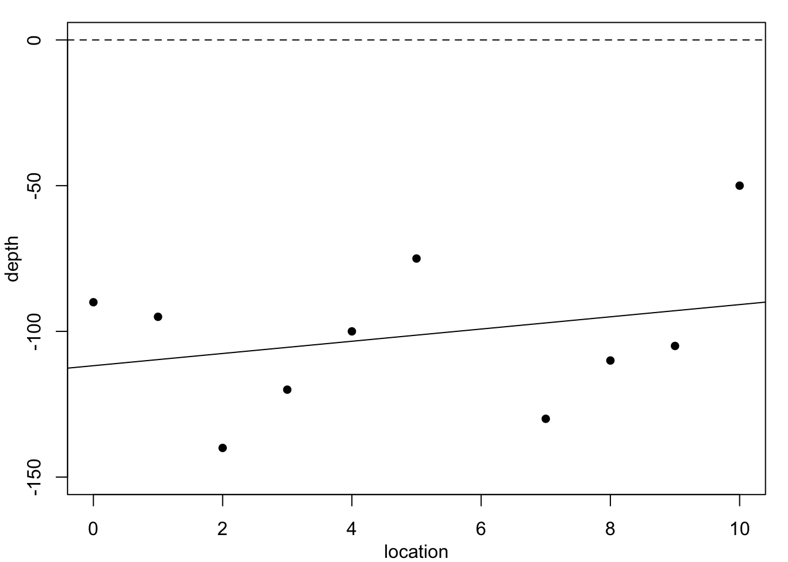

1 Non-parametric Modelling
\[ \def\b#1{\mathbf{#1}} \]
1.1 Introduction
In the Level 3 component of this module, we extend the simple linear regression model to the generalised linear model which can cope with non-normally distributed response variables, in particular data following binomial and Poisson distributions. However, we still just use linear functions of the predictor variables. A further extension of the linear model is the generalised additive model. Here, we no longer insist on the predictor variables affecting the response via a linear function of the predictors, but allow the response to depend on a more general smooth function of the predictor. In the Level 5 component of this module, we study splines and their use in interpolating and smoothing the effects of explanatory variables in the generalised linear models of the Level 3 component of this module (see separate Lecture Notes accompanying MATH3823). Towards the end of the material, we will learn that the fitting of generalised additive models is a straightforward extension of what is learnt in MATH3823.
Outline of the additional material in MATH5824 compared to MATH3823:
- Interpolating and smoothing splines.
- Cross-validation and fitting splines to data.
- The generalised additive model.
1.2 Motivation
Table 1.1 reports on the depth of a coal seam determined by drilling bore holes at regular intervals along a line. The depth \(y\) at location \(x=6\) is missing: could we estimate it?
| Location, \(x\) | 0 | 1 | 2 | 3 | 4 | 5 | 6 | 7 | 8 | 9 | 10 |
| Depth, \(y\) | -90 | -95 | -140 | -120 | -100 | -75 | NA | -130 | -110 | -105 | -50 |
Figure 1.1 plots these data, superimposed with predictions from several polynomial regression models.

Each of these models would predict a different value for the missing observation \(y_6.\) We do not know the accuracy of the depth measurements, so in principle any of these curves could be correct. Clearly, the residual variance is largest for the constant-depth model in Figure 1.1 (a), and smallest for the cubic polynomial in Figure 1.1 (c) – the residual sums of squares are: 6252.5, 5773.05, 4489.84, 4242.89. However, none of these models produces a convincingly good fit. Moreover, these models are not particularly believable, since we know that geological pressures exerted over very long periods of time cause the landscape and its underlying layers of rock to undulate and fracture. This suggests we need a different strategy.
Next, consider the simulated example in Figure 1.2. At first look we might be happy with the fitted curves in Figure 1.2 (a) or Figure 1.2 (b). The data, however, are created with a change-point at \(x=0.67\) where the relationship changes from linear with slope \(0.6\) to a constant value of \(0.75\). This description is completely lost with these two models.
Figure 1.2 (c) shows the result of fitting one linear function to the data below \(0.67\) and a second linear function above. Clearly, this fits well but it has assumed that the change-point location is known – which is unrealistic. Finally, Figure 1.2 (d) shows a fitted cubic smoothing spline to the data – we will studies these models later. This shows an excellent fit and leads to appropriate conclusions. That is, the relationship is approximately linear for small values, then there is a rapid increase, and finally a near constant value for high values. Of course, this is not exactly as the true relationship with a discontinuity at \(x=0.67\) but it would definitely suggest something extreme occurs between about \(0.6\) to \(0.7\). Full details will follow later, but the cubic spline fits local cubic polynomials which are constrained to create a continuous curve.
Now returning to the coal seam data. Figure 1.3 shows the data again, superimposed with predictions from methods which are not constrained to produce such smooth curves.
The simplest method, constant-spline interpolation, assumes that the dependent variable remains constant between successive observations, with the result shown in Figure 1.3 (a). However, the discontinuities in this model make it quite unreliable. A better method, whose results are shown in Figure 1.3 (b), is linear-spline interpolation, which fits a straight line between successive observations. Even so, this method produces discontinuities in the gradient at each data point. A better method still, shown in Figure 1.3 (c), is cubic spline interpolation, which fits a cubic polynomial between successive data points such that both the gradient and the curvature at each data point is continuous.
A feature of all these interpolation methods is that they fit the data exactly. Is this a good thing? The final method assumes that there may be some measurement error in the observations, which justifies fitting a smoother cubic spline than the cubic interpolating spline, but as we see in Figure 1.3 (d) which does not reproduce the data points exactly. Is this a bad thing? We will see during this module how to construct and evaluate these curves. Here, the results are presented only for motivation.
Focus on polynomials quiz
Test your knowledge recall and comprehension to reinforce basic ideas about continuity and differentiability.
Which of the predicted curves in Figure 1.3 are continous?
Which of the predicted curves in Figure 1.3 have a continous first derivative?
Which of the predicted curves in Figure 1.3 have a continous second derivative?
Which of the predicted curves in Figure 1.3 have a continous third derivative?
Which of the predicted curves in Figure 1.3 has the highest residual sum of squares?
1.3 General modelling approaches
We wish to model the dependence of a response variable \(y\) on an explanatory variable \(x\), where \(y\) and \(x\) are both continuous. We observe \(y_i\) at each time \(x_i,\) for \(i=1,\ldots, n\), where the observation locations are ordered: \(x_1 < x_2 < \ldots <x_n\). We imagine that the \(y\)’s are noisy versions of a smooth function of \(x\), say \(f(x)\). That is, \[ y_i = f(x_i) + \epsilon_i, \tag{1.1}\] where the \(\{\epsilon_i\}\) are i.i.d: \[ \epsilon_i \sim \mathrm{N}(0,\sigma^2). \tag{1.2}\] We suppose we do not know the correct form of function \(f\): how can we estimate it?
It is useful to divide modelling approaches into two broad types: parametric and non-parametric.
Parametric models
By far the most common parametric model is simple linear regression, for example, \(f(x) = \alpha + \beta x\), where parameters \(\alpha\) and \(\beta\) are to be estimated. This is, of course, the simplest example of the polynomial model family, \(f(x) = \alpha + \beta x + \gamma x^2 +\cdots + \omega \; x^p\), where \(p\) is the order of the polynomial and where all of \(\alpha, \beta, \gamma, \dots, \omega\) are to be estimated. This has as special cases: quadratic, cubic, quartic, and quintic polynomials models. Also common are exponential models, for example \(f(x) = \alpha e^{-\beta x}\), where \(\alpha,\beta\) are to be estimated – do not confuse this with the exponential probability density function.
Note that the polynomial models are all linear functions of the parameters. They are standard forms in regression modelling, as studied in MATH3714 (Linear regression and Robustness) and MATH3823 (Generalised linear models). The exponential model, however, is an example of a model which is non-linearly in the parameters – it is an example of a non-linear regression model.
Although very many parametric models exist, they are all somewhat inflexible in their description of \(f\). They cannot accommodate arbitrary fluctuations in \(f(x)\) over \(x\) because they contain only a small number of parameters (degrees-of-freedom).
Non-parametric models
In such models, \(f\) is assumed to be a smooth function of \(x\), but otherwise we do not know what \(f\) looks like. A smooth function \(f\) is such that \(f(x_i)\) is close to \(f(x_j)\) whenever \(x_i\) is close to \(x_j\). To characterise and fit \(f\) we will use an approach based on splines. In practice, different approaches to characterizing and fitting smooth \(f\) lead to similar fits to the data. The spline approach fits neatly with normal and generalised linear models (NLMs and GLMs), but so do other approaches (for example, kernel smoothing and wavelets). Methods of fitting \(f\) based on kernel smoothing and the Nadaraya–Watson estimator are studied in the Level 5 component of MATH5714 (Linear regression, robustness and smoothing) where the choice of bandwidth in kernel methods is analogous to the choice of smoothing parameter value in spline smoothing.
Piecewise polynomial models
A common problem with low-order polynomials is that they can often fit well for part of the data but have unappealing features elsewhere. For example, although none of the models in Figure 1.1 fit the data at all well, we might imagine that three short linear segments might be a good fit to the coal-seam data. Also, the piecewise linear model was a good description of the data in Figure 1.2 (c). This suggests that local polynomial models might be useful. In some situation, for example when we know that the function \(f\) is continuous, jumps in the fitted model, as in Figure 1.2 (c), are unacceptable. Alternatively, we may require differentiability of \(f\). Such technical issues lead to the use of splines, which is introduced in the next chapter.
1.4 Exercises
For each, start by defining the residual sum of squares (RSS), \(RSS=\sum (y_i - \hat{y}_i)^2\) where, in turn (a) \(\hat{y}_i= \alpha\), (b) \(\hat{y}_i= \alpha+\beta x_i\), (c) \(\hat{y}_i= \alpha+\beta x_i+\gamma x_i^2\). Then, find he parameter values which minimise the RSS by (possibly partial) differentiation.
There is more than one approach. Can least squares be used? Could a simple transformation of the data and the fitted model make solving the problem easier? Is there an algebraic solution? Is there a purely numerical solution?
With many similar problems, imaging breaking the problem down into steps. If you know the location of the change-point then what should you do? Can you then try different possible change-point locations?
Don’t get too stuck on the data used here, but think of general issues: ease of use, reliability of the data, is there error with the data or is it very reliable? What if the response it discrete?